Formal Logical System
Formal system
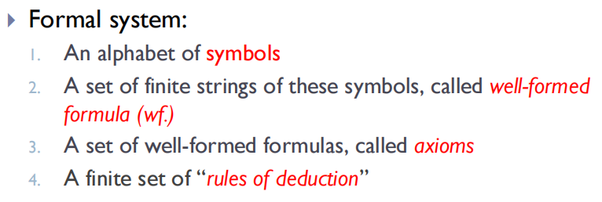
- tautology 恒真的 statement
- contradiction 恒假的 statement
Normal forms
Disjunctive normal form (or of and)
- Every statement form (not a contradiction) is logically equivalent to a restricted statement form of the form $\left(\vee_{i=1}^{m}\left(\wedge_{j=1}^{n} Q_{i j}\right)\right)$ where each $Q_{ij}$ is either a variable or the negation of a variable.
Conjunctive normal form (and of or)
- Every statement form (not a tautology) is logically equivalent to a restricted statement form of the form $\left(\wedge _{i=1}^{m}\left(\vee_{j=1}^{n} Q_{i j}\right)\right)$ where each $Q_{ij}$ is either a variable or the negation of a variable.
Adequate set
- $\sim$ 加上 $\{\wedge,\vee, \rightarrow\}$ 中的任何一个
- 一元的只有 NOR, NAND
（ ）
Formal statement calculus(L)
-
an alphabet of symbols: $\sim, \rightarrow, (, ), P_1, P_2, P_3, \cdots$
-
A set of finite string of these symbols, called well-formed formula:
- $P_i$ is a wf
（ ） - If $A$ and $B$ are wfs, then $(\sim A)$ and $(A \rightarrow B)$ are wfs.
- $P_i$ is a wf
-
Axioms:
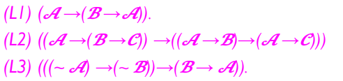
-
rules of deduction
MP: From $A$ and $A \rightarrow B$, we can derive $B$
HS: $\{(A\rightarrow B), (B \rightarrow C)\} \vdash (A \rightarrow C)$
Deduction Theorem
- $\Delta \cup \{A\} \vdash B \Leftrightarrow \Delta \vdash A \rightarrow B$
- Proof: 归纳推导过程的长度
， ：
Unfinished! some examples
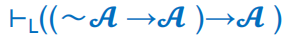
Extension
-
An extension Lof L is consistent if and only if there is a wf. which is not a theorem of L.
-
Otherwise
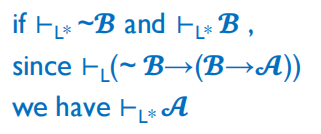
-
-
complete: we can decide every statement true or false
Turing Machines
Standard Turing Machine
- input $w$ is written on the first $|w|$ cells, other cells are empty
- when want to move to the left of the leftmost cell, stay put
- At each time
- read the symbol
- write a symbol
- move left or right
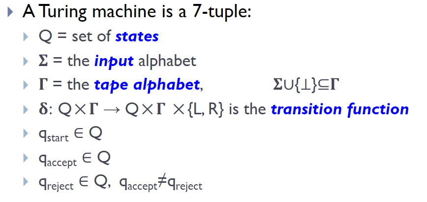
- A language is recursively enumerable (recognizable) if some TM recognizes it.
- the TM can enumerate all the strings
- A language is recursive (decidable) if some TM decides it.
- recursive language $\subset$ recursively enumerable language
Multiple Tapes
2-Tape Turing Machine
- The input is on Tape 1.
- Tape 2 is initially blank.
- Read a symbol from each tape, each head moves. 两个一起动
Simulation on one TM
-
each $a \in \Gamma$ has a mirror state $a ^ *$
if one state has $*$ it means 当前 head 位于这个位置
-
Beginning
- input#$\perp^*$
- replace the first symbol $a$ with $a ^ *$
- 表示 一开始 第一个纸带 输入是input 位置在第一位
- 第二个纸带 输入是空 位置在第一位
- 中间用 # 隔开
- 每一次在一个上面做完了 就找到另一个 $*$ state 然后再做
- special case: 如果第一个纸带做到了 # 上
，
Nondeterministic Turing Machine
- 下一个状态是一个可行集合
- 只要有可行的方式到达 accept 那就是 accept
- simulate 的方式
- 3-tape TM
- tape 1: input
- tape 2: simulate
- tape 3: 按从短到长的顺序 存储 guess (bfs)
- 每次把 1 里面的 input load 到 2 上去
，
- 3-tape TM
- a NTM is a decider if all branches halt on all inputs
TM with outputs
- TM with a write only tape
- enumerator
- a machine that can enumerate strings one by one, maybe with repetitions
- 为什么 Turing recognizable 的 language 称作 recursively enumerable
- 因为可以用一个enumerator E 去 generate
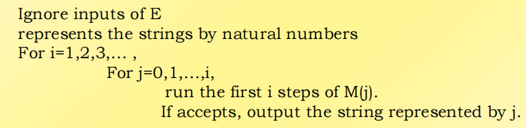
- 为啥得枚举 步数
- 一个 TM 输入的串的长度是否确定了在TM 上运行时间的上界
- 如何recognize
- 每次枚举出来一个 就跟输入 w 比较
- accept的总能判断出来 但 reject 的可能会不停机
Universal Turing Machine (UTM)
- the set of TM is countable
- 可以编号
，
- 可以编号
- UTM
- input: M, w
- output: 与 M 上跑 w 的结果一样
Halting Problem
$A_{TM}$
- $A_{T M}=\{<M, w>\mid M \text { is a TM and } M \text { accepts } w\}$
- want to prove $A_{TM}$ is not decidable
- Proof:
- If $A_{TM}$ is decidable
- $\exist H$ that decides $A_{TM}$
- consider $H(M, <M>)$
- accept if $M$ accepts $<M>$
- reject if $M$ rejects or loops on $<M>$
- always halt
- 令 $D(<M>)$ 如下定义
（ ） 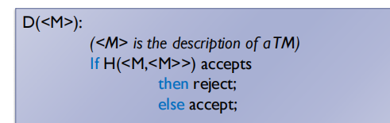
- always halt
- 考虑 $D(<D>)$
- $D$ accept $<D>$ -> $H(D, <D>)$ reject -> $D$ reject or loop on $<D>$
- $D$ reject $<D>$ -> $H(D, <D>)$ accept -> $D$ accept $<D>$
- 总是矛盾
- Thus, $A_{TM}$ is not decidable
- If $A_{TM}$ is decidable
- 显然 $A_{TM}$ is recognizable 因为我们可以直接模拟
- 所以 $A_{TM}$ is not co-recognizable
$HALT_{TM}$
-
$\mathrm{HALT}_{\mathrm{TM}}=\{<M, w>\mid \text{TM } M \text { halts on input } w>$
-
not decidable
-
recognizable
-
not co-recognizable
Turing reducibility
Oracle Turing Machine (OTM)
- 相当于你有一个 oracle language A 就是有一个 tool A
- 你可以询问 A 让他自己告诉你 询问的串 在不在 $A$ 中
Definition
-
Language A is Turing reducible to B, if an oracle TM $M^B$
decides A, write $A\leq _T B$
-
就是说 有了 $B$
， -
Ex: $A_{TM} \leq_T HALT_{TM}$
Examples
-
$E_{TM} = \{\langle M \rangle \mid M 是一个图灵机<span class="bd-box"><h-char class="bd bd-beg"><h-inner>，</h-inner></h-char></span>且 L(M) = \emptyset\}$
Undecidable
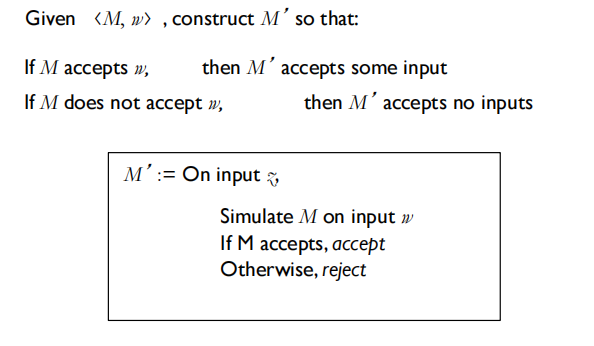
-
$REGULAR_{TM} = \{\langle M \rangle \mid M 是一个图灵机<span class="bd-box"><h-char class="bd bd-beg"><h-inner>，</h-inner></h-char></span>且 L(M) 是一个正则语言\}$
Undecidable
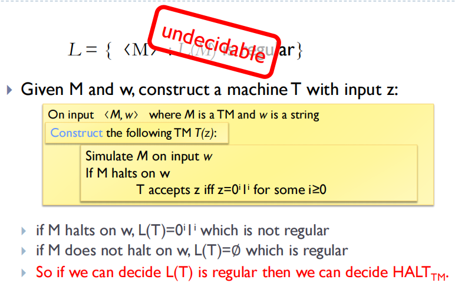
-
$E Q_{\mathrm{TM}}=\left\{\left\langle M_{1}, M_{2}\right\rangle \mid M_{1}\right.$ 和 $M_{2}$ 都是图灵机, 且 $\left.L\left(M_{1}\right)=L\left(M_{2}\right)\right\}$
Undecidable
If $EQ_{TM}$ is decidable,
令 $M_1$ 是一个拒绝所有输入的图灵机
对于 $M$
， 解决了 $E_{TM}$
Properties of CFG
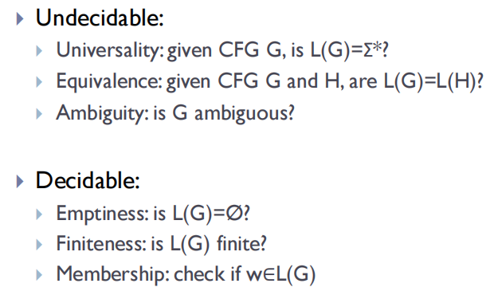
Reduction via Computation History
Definition of computation history
-
Let $M$ be a TM and $w$ be an input string.
An accepting computation history for $M$ on $w$ is a sequence of configurations, $C_1, C_2, \cdots, C_l$ , where $C_1$ is the start configuration of $M$ on $w$, $C_l$ is an accepting configuration of $M$, and each $C_i$ legally follows from $C_{i−1}$ according to the rules of $M$.
A rejecting computation history for $M$ on $w$ is defined similarly, except that $C_l$ is a rejecting configuration.
一个 configuration $C_i$ 是指 形如 $u a q_i b v$ 的组合 包含了带子的内容 头的位置和状态信息
-
计算历史 是有限序列
如果不停机 那么不存在计算历史
Example: Linear bounded automaton (LBA)
-
LBA 是一种图灵机 不允许 head 离开 input 在带子上的区域
-
相当于 纸带的存储大小被 input bound 住
-
$A_{LBA} = \{\langle M, w\rangle \mid M是一个接受w的LBA\}$
-
Lemma: Let $M$ be an $LBA$ with $q$ states and $g$ symbols in the tape alphabet. There are exactly $qng^n$ distinct configurations of $M$ for a tape of length $n$.
configuration数有限 显然
-
$A_{LBA}$ is decidable
- 因为 configuration 的上限 is $qng^n$ 我们可以在 w 上 模拟这么多步 或者直到它停机
- 如果接受就接受 如果拒绝或者还没跑完就拒绝
-
$E_{LBA}$ is not decidable
- 想要从 $E_{LBA}$ 规约到 $A_{TM}$
- 对于 $M$ 和 $w$ 我们构造一个检查器 检查器的输入是 $M, w$ 以及一段 accepting computation history
- 检查器就是检查 computation history 是否合法 显然不需要额外的空间 因此是 LBA
- 我们只要判断是否属于 $E_{LBA}$ 也就是判断了 是否存在 accepting computation history
Example: $ALL_{CFG}$
-
$ALL_{CFG}$ is not decidable
-
想要从 $ALL_{CFG}$ 规约到 $A_{TM}$
-
构造一个非确定的 PDA 对于 M 和 w
- 如果 M 接受 w 则 PDA 不能接受所有的串
- 不接受 M 中 w 的 accepting history
！ ！ ！
- 不接受 M 中 w 的 accepting history
- 如果 M 不接受 w 则 PDA 能够接受所有的串
- 如果 M 接受 w 则 PDA 不能接受所有的串
-
所以只要构造这样的PDA 不接受 w 的 accepting history 其他均接受
-
接受以下所有
-
- 不以 $C_1$ 开始
- 不以一个 accepting configuration 结束
- 某个 $C_i$ 不能派生 $C_{i+1}$
-
PDA 也有三个分支分别对应三种情况
-
-
不以 $C_1$ 开始就接受
-
不以 accepting 结束 就接受
-
一个个判断
在判断 $C_i$ 到 $C_{i+1}$ 时
， 然后与 $C_{i+1}$ 一点点比较
， 读写头部分用 $M$ 去判断是否合理
一个小问题 是 压入栈之后顺序会颠倒
， 解决方案
： 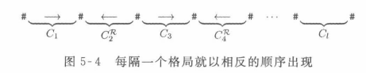
-
-
-
Post correspondence problem (PCP)
- 七种block
- 开始的block [# | #$q_0w_1w_2\cdots w_n$#]
- 如果 $\delta(q, a) = (r, b, R)$
， - 如果 $\delta(q,a) = (r, b, L)$
， - 加入 $[a | a]$ $(\forall a)$
- [# | #], [# | $\epsilon$#]
- [$aq_{accept}$ | $q_{accept}$], [$q_{accept}a$ | $q_{accept}$] 用来蚕食最后的剩余的骨牌们
- [$q_{accept}$## | #] 最后位置上的匹配
- 如何强制让第一种排在第一位
， ？ 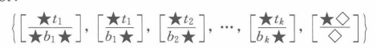
- 这样 只有第一个是开头都是星星
- 只有最后一个结尾都是方块
Mapping reducibility
Definition
- A function is computable / recursive if some TM $M$, on every input $w$, halts with $f(w)$.
- Language $A$ is mapping reducible to language $B$ if there is a recursive function $f$ s.t. $w\in A \Leftrightarrow f(w) \in B$.
Properties
- If $A \leq _m B$ and $B$ is decidable, then $A$ is decidable.
- If $A \leq _m B$ and $B$ is recognizable, then $A$ is recognizable.
- If $A \leq _m B$ and $B$ is co-recognizable, then $A$ is co-recognizable.
Example
- Prove $EQ_{TM}$ is not decidable, recognizable, co-recognizable.
- not decidable:
- proved by Turing reduction
- 规约到 $A_{TM}$ 是否与一个 空的TM 相同
- not recognizable:
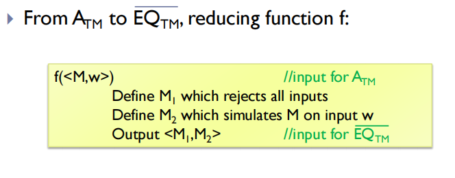
- $A_{TM}$ is not co-recognizable, so $EQ_{TM}$ is not recognizable.
- not co-recognizable:
- 类似
Difference with Turing reducibility
-
更强
-
需要是同向的
-
性质一样 因为能够用一个 $f$ 去 map
-
Turing-reduction only for proving undecidability, and mapping-reduction can be used for prove unrecognizability.
Recursion Theorem
- Let $t: N \rightarrow N$ be a recursive function. There is a TM $F$ for which $t(\langle F\rangle)$ is the code of a Turing machine equivalent to $F$.
Proof
- define such a TM $D$:
D(<M>):
output the code of the TM:
G(y):
d = M(<M>)
simulate the machine with code d on y
-
$D$ is recursive because 只是输出一个编号
， -
define a TM $V$:
V(<M>):
output t(D(<M>))
-
Let $\langle F \rangle = D(\langle V \rangle)$
-
Then when running $F(y)$:
d = V(<V>) = t(D(<V>)) = t(<F>)simulate the machine with code d on y
-
So
F(y) = simulating the TM with code t(<F>) on y
Diagonalized Proof
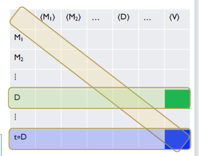
- Unfinished
Generalization: Kleene’s recursion theorem
- Let $t$ be a recursive function $t: N \times N \rightarrow N$. There is a Turing machine $R: N \rightarrow N$, where $R(x)=t(\langle R\rangle, x)$
Proof
- Define a recursive function $s: N \rightarrow N$ by s-m-n thm:
s(x):
output the code of TM on input y computing t(x,y)
-
By recursion theorem on $s$, we have a TM $F$ s.t. the TM with code $s(\langle F\rangle)$ is equivalent to $F$.
-
The TM with code $s(\langle F \rangle)$ is the TM that computes $t(x,y)$ on input $y$.
Unfinished
Kolmogorov complexity
Definition
- Let $x$ be a binary string.
- The minimum description $d(x)$ of $x$ is the shortest string $<M,w>$ where TM $M$ on input $w$ halts with $x$ on the tape.
- The Kolmogorov complexity $K(x)=|d(x)|$
- 串 $x$ 的信息量
Properties
- $\forall x$, $K(x) \leq |x| + c$, for some constant $c$.
- $\forall x$, $K(xx) \leq |x| + c$, for some constant $c$.
- $\forall x$, $K(x ^ n) \leq |x| + c \log n$, for some constant $c$.
- 存储 $n$
， - 任何的图灵机 都是固定长度的 除了输入的部分
- 存储 $n$
c-compressible
-
A string $x$ is c-compressible if $K(x) \leq |x| - c$.
-
If $x$ is not 1-compressible, then $x$ is incompressible.
-
Thm: Incompressible strings of every length exist.
- Proof: 为什么只用 二进制串的 description
-
Thm: $\forall n, c$, $\operatorname{Pr}_{x \in\{0,1\}^{n}}[K(x) \geq|x|-c] \geq 1-\frac{1}{2^{c}}$
- Proof: 一样考虑二进制的 description 的个数
Compressibility
-
$COMPRESS = \{(x, c) \mid K(x) \leq c\}$
-
Thm: COMPRESS is undecidable.
Proof:
-
Construct a Machine M:
M(n): For all y in 字典序<span class="bd-box"><h-char class="bd bd-beg"><h-inner>：</h-inner></h-char></span> if (y, n) \notin COMPRESS print y halt -
Then we get $y$, the first string of $K(y) > n$
-
但是 $M(n)$ prints y, $K(y) \leq |\langle M, n\rangle | = c + \log n$
-
当 $n$ 充分大时矛盾
-
Chaitin’s incompleteness theorem
-
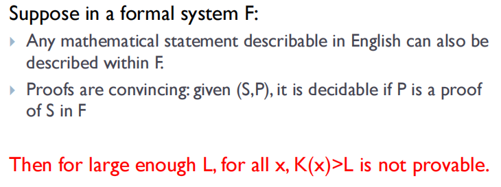
-
Proof:
-
Suppose we can prove $K(x) > L$ for some $x$.
-
选择 proof 的长度最小的 $P$ which proves $K(y) > L$.
-
考虑这样一个图灵机
： R(L): 枚举所有的argument Q<span class="bd-box"><h-char class="bd bd-beg"><h-inner>：</h-inner></h-char></span> check whether Q is valid check whether Q proves K(y) > L If yes, outputs y这样一个玩意儿的长度是 $|\langle R, L\rangle| = c + \log L$
， （ ， ）
-
“Were-you-last” Game
- m players, unlimited bits
- each player can read/write $\leq t$ bits
Solution
Trivial solution
- Counter
If Counter = 0, Counter = m
Else Counter -= 1
- $t = O(\log m)$
real solution
- use several blocks to represent the counter
- type of last block 0 / 1
- number of blocks
- size of each block
- $t \leq 4 \log \log m + O(1)$
- How to set the initial counter to m?
- work on $C' = C \oplus m$
- Lower bound of $t$: $0.4 \log \log m$
- Cannot be solved when $t = o(\log\log m)$
- 无论玩家什么策略
， ， ， （ ） ， （ ） - 如果玩家的策略均相同
- $\forall i, S_i = S$
- $|S| < \log m$
，
- 如果玩家策略不同
- Sunflower Lemma
- A sunflower: 一堆集合
， ， - Let $S_1, \cdots, S_m$ be a collection of sets each of size $\leq l$. If $m > (p - 1) ^ {l+1} l!$, then 存在一个包含p个集合的 sunflower
- A sunflower: 一堆集合
- 取 $l = 2 ^ t - 1$, $m > (p-1) ^ {l+1} l!$
- 存在一个 $p$ 的 sunflower
， - 首先搞定其他所有的人
， ， ， - center 的状态 $\leq 2 ^ l$
， ， ， - 假设 $i$ 出现在 $j$ 之前
， ， ， ， - $(2 ^ l) ^ {l+1} l! \leq 2 ^ {l ^ 2 + l + l\log l} < m$ 合理
- Sunflower Lemma
- 无论玩家什么策略
Bounds of Complexity
- $O$ 上界 $\Omega$ 下界
- 基于比较的排序的复杂度
- 决策树
Dynamic Partial Sum
Description
- 单点修改
- 求前缀和
Bound of complexity
-
线段树 复杂度 查询修改均为 $O(\log n)$
-
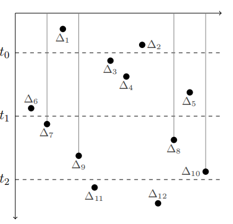
Interleave info(IL)
-
$IL(t_0, t_1, t_2)$ 表示 $(t_0,t_1)$ 向 $(t_1,t_2)$ 传递信息的次数
（ ） -
$IL(t_0, t_1, t_2)$ is the number of transitions between a value $\pi(i)$ with $i<t_1$, and a consecutive value $\pi(j)$ with $j>t_1$
-
$E[IL(t_0, t_1, t_2)]$
- $\operatorname{Pr}\left[\mathrm{j}\right.$ is in $\left.\left[\mathrm{t}_{0}, \mathrm{t}_{1}\right]\right]=\mathrm{k} /(2 \mathrm{k})=1 / 2$
- $\operatorname{Pr}\left[j+1\right.$ is in $\left[t_{1}, t_{2}\right] \mid$ j is in $\left.\left[t_{0}, t_{1}\right]\right]=k /(2 k-1)$
- $\mathrm{E}\left[\mathrm{IL}\left(\mathrm{t}_{0}, \mathrm{t}_{1}, \mathrm{t}_{2}\right)\right]=(2 k-1) \cdot \frac{k}{2(2 k-1)}=\frac{k}{2}$
-
Unfinished bound
Information transfer (IT)
- $IT(t_0, t_1, t_2)$ 表示 在 $(t_0, t_1)$ 写 在 $(t_1, t_2)$ 读 且 在 $(t_1, t_2)$ 不再写 的 memory locations 的集合
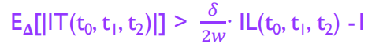